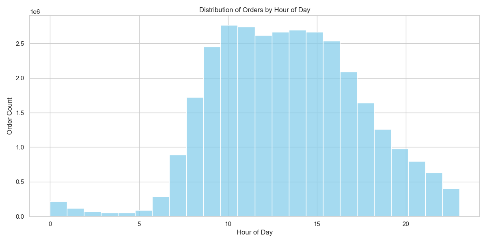

Projektübersicht
Dieses Projekt analysiert das Kaufverhalten von Instacart-Kunden, um Muster bei Bestellhäufigkeit, Produktbeliebtheit und Bestellzeitpunkten zu identifizieren und handlungsreife Erkenntnisse zu gewinnen.
Tools & Bibliotheken
Python · Pandas · NumPy · Matplotlib · Verhaltens-Segmentierung
Datensatz: ~3,4 Millionen Zeilen in 6 Tabellen — Bestellungen, Produkte, Abteilungen, Gänge, Bestellprodukte. Ca. 200.000 Nutzer, 50.000 Produkte.
Problemstellung
Instacart wollte das Kaufverhalten seiner Kunden besser verstehen, um gezielte Marketingstrategien zu entwickeln, die Produktplatzierung zu optimieren und die Wiederkaufrate zu erhöhen. Ziel war es, welche Verhaltensmuster langfristige Kundenbindung und Wert treiben.
Datengrundlage
Der Datensatz umfasst Transaktionsdaten, Produktinformationen, Abteilungskategorien und kundenbezogene Metriken. Die Analyse wurde mit Python (Pandas, NumPy, Matplotlib) durchgeführt.
Vorgehensweise
- Bereinigung und Validierung der Transaktionsdaten
- Analyse der Bestellhäufigkeitsverteilung
- Untersuchung von Wiederkauf-Mustern nach Abteilungen
- Segmentierung von Kunden nach Verhaltensmuster
- Identifikation zeitbasierter Bestellmuster
Zentrale Erkenntnisse
- Hochfrequenz-Kunden machen einen überproportionalen Anteil der Gesamtbestellungen aus
- Die Bestellaktivität konzentriert sich auf vorhersehbare Tagesfenster
- Die Wiederkaufwahrscheinlichkeit steigt mit Kundenlaufzeit und Wiederholungskäufen
- Der Umsatz hängt strukturell vom Wiederholungsverhalten ab — nicht von der Kundenzahl
1) Bestellhäufigkeit treibt überproportionalen Wert

2) Bestellaktivität ist zeitlich konzentriert

Fazit
Die Analyse zeigt, dass Instacarts Performance von konzentrierten Verhaltensgruppen getrieben wird, nicht von gleichmäßig verteilter Nachfrage. Durch den Fokus auf Hochfrequenz-Kunden und die Ausrichtung an Spitzenaktivitätszeiten kann das Unternehmen Kundenbindung, Marketingeffizienz und Customer Lifetime Value verbessern.